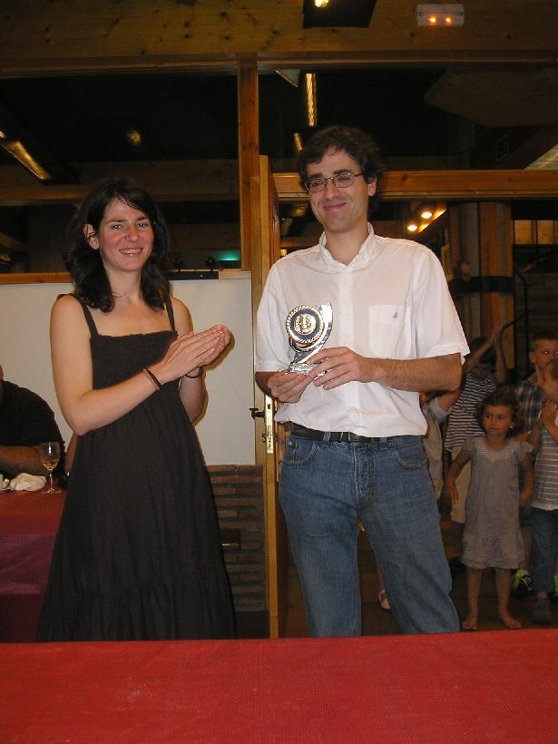
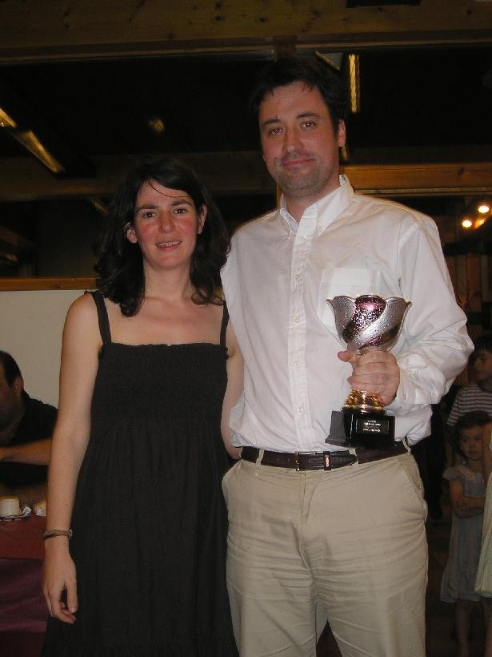
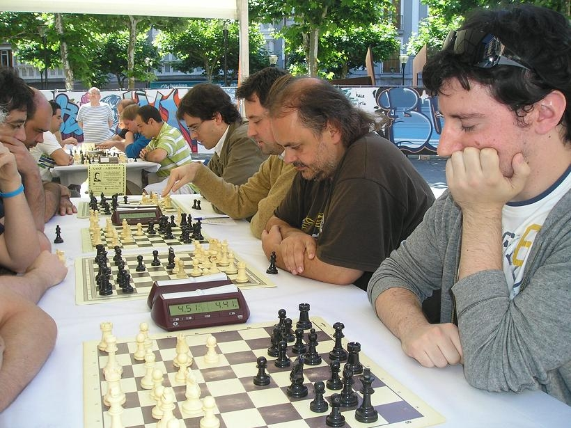

Agustin de Leitza Xake Elkartea |
| » hasiera » elkarteko bazkideak » taldekako txapelketa » azken txapelketak » loturak |
Tolosako pintxetak2011-06-19 Aurten ere gonbidatu gaituzte Tolosako San Joan festetako txapelketa jolastera, beraz hemendik eskerrak antolakuntzari. Hara Iosu, Claudio, Félix eta Aritz joan ziren, eta ordena honetan jokatu zuten. Aurtengo txapelkata iazkoa baina pixka bat hobe joan zen, berriro bukatu ginen bigarren, Fomento berriro garaile izanik, baina Iosuk irabazi zuen jokalari hobenerako trofeoa.  Aurten ez ginen izan ohiko 16 talde 14 baizik, krisia akaso? Hala ere, antolakuntzak esan zigun gonbidapenak luzatu zituela ohiko taldeei. Txapelketa buelta bateko liga izan zen, eta gutxienez, Fomentok ez gintuen harrapatu lehenengo txandan erdi lo, eta ondo hasi ginen. Hala ere, pixkanaka “lo” hartzen joan ginen, eta nahiz eta bigarren postua erraz lortu genuen Fomentok nahiko urrun bukatu zuen.  Gure jokalarien jokabidea desorekatuta izan zen, alde batetik, Iosuk puntu erdi bakarrik galdu zuen txapelketa osoan, eta Claudiok puntu bakar bat. Félixek eta Aritzek aldiz, gehiago galdu zituzten, eta nabaritu zuten erritmo honetan aspaldi jokatu ez izana. “Rémora” handiena Aritz izan zen, baina aitzakia on bat dauka, aurreko gauean Rock jaialdiak Nafarroa Plazan ez zion lorik egin utzi.  Baina beti bezala txapelketa honetan eguna oso ondo bukatu zen, hotel Oriako jatetxean, non denok garen superGM.
|